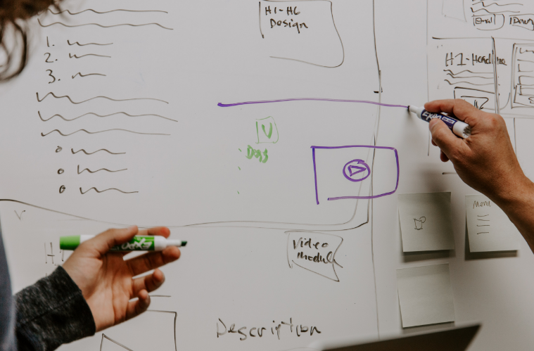

About Us
국제 수준의 원고편집(manuscript editing)을 구현함으로써 우리나라 과학학술지 발전에 기여하고 있습니다.
우리나라 최초로 원고편집의 개념을 도입하고 국제적 수준의 원고편집을 시행함으로써, 학회나 기관에서 비영리 형태로 간단히 조판하고 인쇄하여 발행하던 기존의 국내 학술지의 수준을 한 차원 높이고 있습니다. 또한 학회 및 기관, 출판사 등 학술출판 분야에 대한 꾸준한 교육을 통해 전문 학술출판의 중요성과 역할에 대한 인식을 개선합니다.
우리나라 최초로 원고편집의 개념을 도입하고 국제적 수준의 원고편집을 시행함으로써, 학회나 기관에서 비영리 형태로 간단히 조판하고 인쇄하여 발행하던 기존의 국내 학술지의 수준을 한 차원 높이고 있습니다. 또한 학회 및 기관, 출판사 등 학술출판 분야에 대한 꾸준한 교육을 통해 전문 학술출판의 중요성과 역할에 대한 인식을 개선합니다.


Core Task
- 학술지 출판
- 학술지 원고편집(Manuscript Editing) 및 Coordinating
- 학술지 국제화 관련 Consulting
- 해외 데이터베이스 등재 지원
- 학술지 현황 분석(인용분석)
- Manuscript Editor 교육 및 양성
Service


2009년에 설립한 이후 한국과학기술단체총연합회(과총) “학술지 국제화지원 시범사업”의 원고편집 부문 전문회사로 선정,
대한의학학술지편집인협의회 “의학학술지 평가항 목” 개발 및 실무기관으로 참여하고 있습니다.
과총 지원 “학술지 목록 웹 데이터베이스 구축” 프로젝트,
한국연구재단 “국내 학술지 발전을 위한 차세대 학술지 지원 로드맵 수립 연구” 프로젝트 등에 참여함으로써 한국 과학 학술지 발전에 기여하고 있습니다.

Our Team
- Board of Editors in the Life Sciences (BELS) 자격
- The University of Chicago, Graham School of Continuing Liberal and Professional Studies 이수
- American Medical Writers Association (AMWA) 이수
- 한국 원고편집인(Korea Manuscript Editors Certification) 자격
- 한국과학학술지편집인협의회 활동(원고편집위원장, 원고편집부위원장, 기획운영부위원장 등)
- 국내외 학회 참석 및 발표